FontForge's math
Being a brief description of the mathematics underlying various of
FontForge's commands
It is presumed that you understand about parameterized splines, if not look
at the description of Bézier curves.
- Linear Transformations
- Finding maxima and minima of a spline
-
Rasterizing a Glyph
- finding intersections
- removing overlap
- Approximating a spline
- Stroking a spline
- Approximating a cubic spline by a series of quadratic splines
Linear Transformations
A linear transformation is one where the spline described by transforming the end and control points will match the transformed spline. This includes most of the common transformations you might wish:
-
translation
x' = x + dx y' = y + dy -
scaling
x' = sx * x y' = sy * y -
rotation
x' = cos(A)*x + sin(A)*y y' = -sin(X)*x + cos(A)*y -
skewing
x' = x + sin(A)*y y' = y
Finding maxima and minima of a spline
The maximum or minimum of a spline (along either the x or y axes) may be found by taking the first derivative of that spline with respect to t. So if we have a spline
x = ax*t3 + bx*t2 + cx*t +dx
y = ay*t3 + by*t2 + cy*t +dy
and we wish to find the maximum point with respect to the x axis we set:
dx/dt = 0
3*ax*t2 + 2*bx*t + cx = 0
and then using the quadratic formula we can solve for t:
| t= | -2*bx ± sqrt(4*bx2 - 4*3*ax*cx) |
----------------------------------- |
|
2*3*ax |
Finding points of inflection of a spline
A point of inflection occurs when d2y/dx2==0 (or infinity).
Unfortunately this does not mean that d2y/dt2==0 or d2x/dt2==0.
| d2y/dx2 = | d/dt ((dy/dt)/(dx/dt)) / dx/dt |
| ( ((dx/dt) * d2y/dt2) - ((dy/dt) * d2x/dt2)) / (dx/dt)3 |
After a lot of algebra this boils down to the quadratic in t:
| 3*(ax*by-ay*bx)*t2 + | ||
| 3*(cx*ay-cy*ax)*t + | ||
| cx*by-cy*bx | = 0 |
If you examine this closely you will note that a quadratic spline (ay==ax==0) can never have a point of inflection.
Rasterizing a glyph
Approximating a spline
Many of FontForge's commands need to fit a spline to a series of points. The most obvious of these are the Edit->Merge, and Element->Simplify commands, but many others rely on the same technique. Let us consider the case of the Merge command, suppose we have the following splines and we wish to remove the middle point and generate a new spline that approximates the original two:
 =>
=>

FontForge uses a least squares approximation to determine the new spline. It calculates the locations of several points along the old splines, and then it guesses1 at t values for those points. We want:
x = ax*t3 + bx*t2 + cx*t +dx
y = ay*t3 + by*t2 + cy*t +dy
That best fit these points. Well, from the definition of a parameterized spline (and the fact that we know the end-points):
| dx = P0x | dy = P0y | |
| ax+bx+cx+dx = P1x | ay+by+cy+dy = P1y |
From least squares we know:
| 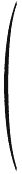 | 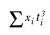 | 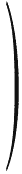= | 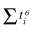 | 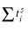 | 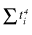 | 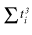 | * | ax | |
| 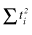 | bx | ||||||||
| 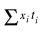 | 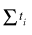 | cx | |||||||
| 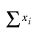 | n |
dx |
And similarly for y. So this gives us 12 equations and 8 unknowns, so we're a bit over-specified. Well it must be a spline, so we need the first four equations, and then I use the bottom two equations for x, and the corresponding two for y.
Why that didn't work
The above matrix yields a curve which is a good approximation to the original two. But it has one flaw: There is no constraint placed on the slopes, and (surprisingly) the slopes at the end-points of the above method are not close enough to those of the original, and the human eye can now detect the join between this generated spline and the two that connect to it.
I tried constraining the slopes by adding new yet more equations to our over specified system, We know that
| dyt=0 | = | (dy/dx)t=0 * dxt=0 |
| dyt=1 | = | (dy/dx)t=1 * dxt=1 |
- or - |
||
| cy | = | old-cy/old-cx * cx |
| 3*ay+2*by+cy | = | (3*old-ay+2*old-by+old-cy)/(3*old-ax+2*old-bx+old-cx) * (3*ax+2*bx+cx) |
- or - |
||
| cy * old-cx | = | old-cy * cx |
| (3*ay+2*by+cy) * (3*old-ax+2*old-bx+old-cx) | = | (3*old-ay+2*old-by+old-cy) * (3*ax+2*bx+cx) |
(where old-ay, old-by, etc. are the values of the original spline at that end-point)
That didn't work either
Sadly this did not work very well. I ended up with singular matrices far too often (if one of the control points was in the same place as the end-point, for example).
So instead I calculate a unit vector tangent to the curve at each end-point (that is: the slope). Usually this can be done by making the vector from the end point to its control point be a unit vector, but if the control point lies on top of the end point other methods must be used (setting t=.001 or t=.999 and calculating a difference vector is one method).
Then apply the original algorithm.
Now I look at the end points, and calculate vectors from them to their new control points. Then find the dot-products of these vectors with the original slope unit vectors. (this gives us our first approximation to a new location for the control points (CP = EP + len*Unit-Slope)
Now for each of these vectors I subtract off the contribution from the original slope (leaving me with component normal to the original slope), and take the dot product of this normal component with the slope from the other end-point, and multiply this by the unit slope of the other end point and adjust its control point by this amount (CPo += len2*Unit-Slopeo).
Nor did that
What I do now is calculate the slope vectors at the endpoints and then try many reasonable lengths for those vectors and see which yields the best approximation to the original curve (this gives us our new control points). No need for least squares at all.
1Guessing values for t
FontForge approximates the lengths of the two splines being merged. If
Pointi = Spline1(old-ti), then we approximate ti by
ti = old-ti
*len(spline1)/(len(spline1)+len(spline2)
and if Pointi = Spline2(old-ti)
ti = len(spline1)/(len(spline1)+len(spline2) +
old-ti *len(spline2)/(len(spline1)+len(spline2)
That is we do a linear interpolation of t based on the relative lengths of
the two splines.
Calculating the outline of a stroked path
A circular pen
PostScript supports several variants on the theme of a circular pen, and FontForge tries to emulate them all. Basically PostScript "stroke"s a path at a certain width by:
at every location on the curve
find the normal vector at that location
find the two points which are width/2 away from the curve
filling in between those two points
end
This is essentially what a circular pen does. The only aberrations appear at the end-points of a contour, or at points where two splines join but their slopes are not continuous. PostScript allows the user to specify the behavior at joints and at end-points.
 =>
=> 
For the main body of the spline we can use the above method to generate two sets of points (one to the left and one to the right of the original curve) and then use the approximation method above to generate a spline from that (note the slopes of the new splines at their end points should be parallel to those of the original, so we can use the slope of the original in the above algorithm).
Unfortunately that doesn't always work. If the spline makes a very sharp bend, the our approximation method above is unable to produce a good approximation. When that happens FontForge attempts to break the spline in two, adding a point near the sharp bend. The approximation of the two sub-splines is generally much better. (How does FontForge figure out where to break a line? It uses two methods, one just adds points to the extrema of the original curve, and the other looks for places where the innermost path intersects itself).
PostScript pens can end in
- A flat edge -- this is easy, we just draw a line from the end of one spline to the end of the other
- A rounded edge -- here we just draw a semi-circle (making sure it goes in the right direction).
- A butt edge -- just draw lines continuing the two splines, moving with the same slope and width/2 units long, and then join those end-points with a straight line.
Things are a bit more complex at a joint
 =>
=>
 ,
the green lines in the right image show where the path would have gone had
it not been constrained by a joint, so on the inside of the joint FontForge
must figure out where this intersection occurs. While on the outside FontForge
must figure out either a round, miter or bevelled edge.
,
the green lines in the right image show where the path would have gone had
it not been constrained by a joint, so on the inside of the joint FontForge
must figure out where this intersection occurs. While on the outside FontForge
must figure out either a round, miter or bevelled edge.
An elliptical pen
This is really just the same as a circular pen. Let us say we want an ellipse which is twice as wide as it is high. Then before stroking the path, let's scale it to 50% in the horizontal direction, then stroke it with a circular pen, and then scale it back by 200% horizontally. The result will be as if we had used an elliptical pen.
Obviously if the ellipse is at an angle to the glyph's axes, we must apply a more complicated transformation which involves both rotation and scaling.
A rectangular pen (a calligraphic pen)
Things are subtly different between a rectangular pen and a circular pen. We can no longer just find the points which are a given distance away and normal to the curve. Except where the spline is parallel to one edge of the pen, a the outer contour of a rectangular pen will be stroked by one of its end-points. So all we need do is figure out where a spline is parallel to the pen's sides, and look at the problem in little chunks between those difficult points.
If we are between difficult points then life is very simple indeed. The edge will always be stroked by the same end-point, which is a fixed distance from the center of the pen, so all we need to do is translate the original spline by this distance (and then fix it up so that t goes from [0,1], but that's another easy transformation).
When we reach a point where the spline's slope is parallel to one edge of the pen, then on the outside path we draw a copy of that edge of of the pen, and on the inside edge we calculate a join as above.
An arbitrary convex polygonal pen
FontForge does not currently do this (the UI for specifying an arbitrary polygon is a little difficult), but the same method which works for a rectangle can be extended without too much difficulty to any convex polygon. (MetaFont fonts can be drawn with such a pen. I don't know if any are)
A pen of variable width
If you have a wacom tablet then FontForge also supports variable width pens. Extending the above algorithms is fairly simple.
A pen at a varying angle
FontForge does not support this. I don't see a good UI for it. (MetaFont fonts can be drawn with such a pen).